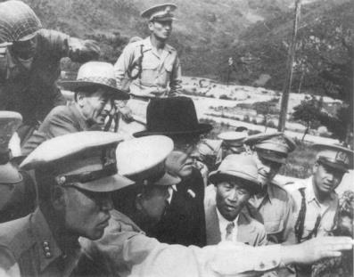

Dulles Kore cephesinde, Haziran 1950
Birleşik Devletler, Roosevelt’in düşündüğü gibi, Avrupa’dan “çocuklarını vatana geri getirmedi.” Onun yerine, Sovyet saldırılarına karşı durmak için kurumlar ve programlar oluşturarak, Sovyet küresine baskı yapmaya başladı.
Üç yıl süresince sınırlandırma politikası istendiği gibi işledi. Marshall Planı Avrupa’yı ekonomik ve sosyal yönden güçlendirirken, Atlantik İttifakı da Sovyet yayılmacılığına karşı askeri bir siper görevi gördü. Yunanistan ve Türkiye’ye yardım programı Doğu Akdeniz’de Sovyet tehdidini önledi ve Berlin’e yapılan havadan ulaşım, demokrasilerin, kabul edilmiş haklarına karşı tehdit söz konusu olduğu zaman savaşı göze almaya hazır olduklarını gösterdi. Her iki olayda da Sovyetler Birliği, Birleşik Devletler’le çatışmak yerine geri çekilmeyi yeğledi.
Fakat sınırlandırma teorisinin temel bir kusuru vardı ve Amerikalı liderlerin iki yanlış varsayıma dayanarak hareket etmelerine neden oluyordu: Birincisi, meydan okumalar İkinci Dünya Savaşı’nda olduğu gibi belirli bir şekilde devam edecekti; ikinci olarak da komünist yönetim, sınırlandırma teorisinde öngörüldüğü şekilde hareketsiz bir şekilde oturarak kendi yönetiminin dağılmasını bekleyecekti. Komünistlerin, Birleşik Devletler için stratejik veya politik bakımdan çok karışık bir bölgeyi hedef alarak bu beklentiyi denemeyi seçebilecekleri akıllarına gelmedi.
Sınırlandırma politikası, Avrupa adına isteksiz bir Kongre’ye devredilmişti. Akdeniz’e yönelen bir Sovyet saldırısı korkusu, Yunan ve Türk yardım programını yarattı ve Batı Avrupa’ya Sovyet saldırısı tehlikesi ise, Kuzey Atlantik Antlaşması Örgütü’nün kurulmasına neden oldu. Bir Sovyet baskısının başka bir yerde ortaya çıkması olasılığı ancak sonradan akla geldi.
28 Haziran 1950’de Amerika Washington’un savunma alanı dışında ilan ettiği ve bir önceki yıl bütün kuvvetlerini geri çektiği bir bölgedeki bir ülkeye bir komünist devleti tarafından yapılan bir saldırıyla karşılaşınca, birdenbire sınırlandırma politikasının belirsizlikleriyle sınırlandırma zorunda kaldı. Saldırgan Kuzey Kore, kurban ise Güney Kore’ydi. Her iki ülke de Amerikan stratejisinin odak noktası olan Avrupa’dan çok uzaktaydı. Yine de Kuzey Kore saldırısından sonraki birkaç gün içinde, Truman Amerikan planlamasında veya Kongre’ye yapılan açıklamalarda öngörülmemiş bir bölgesel savunma stratejisi uygulamak üzere acele Japonya’daki iyi eğitim görmemiş işgal birliklerinden bir öncü kuvvet oluşturdu. Amerika’nın savaş sonrası politik ve stratejik doktrini, bu tür bir saldırı olasılığını hiç hesaba katmamıştı.
Amerikalı liderler bir savaş için ancak iki olası neden belirlemişlerdi: Birleşik Devletler’e bir sürpriz Sovyet saldırısı veya Batı Avrupa’nın Kızıl Ordu tarafından istilası. Kara Kuvvetleri Başkanı General Omar N. Bradley, 1948’de Kongre’de verdiği ifadede şöyle diyordu:
“Ulusal güvenlik planları, Birleşik Devletler’in hava ve karadan indirme ile yapılacak bir saldırıyla karşı karşıya kalabileceği olasılığını göz önüne almak zorundadır. Böyle bir saldırı olasılığı ve uygulanabilirliği her geçen gün artıyor...(Bu nedenle) düşmanın bize saldırabileceği yerlerde acele üsler kurmak zorundayız. Bundan sonra, büyük ölçüde havadan süratle karşı saldırıya geçmemiz gerekecektir... Karşı vuruşları yapmak için şimdi sahip olmadığımız üslere gereksinimimiz vardır. (Bu) üsleri elde etmek ve korumak... Ordu’nun savaş unsurlarını gerektirecektir.”{643}
Bradley, her şeyi yerle bir eden bir savaştan tam üç yıl sonra, Birleşik Devletler’in elinde atom bombası tekeli varken ve Sovyetler Birliği’nin elinde uzun menzilli hava gücü olup olmadığı bilinmezken, Sovyetler Birliği’nin nasıl ve neden böyle bir strateji izleyebileceğini açıklamadı.
Amerika’nın davranış biçimindeki hiçbir şey, Moskova ve Pyongyang’daki (Kuzey Kore’nin başkenti) politika üretenlerin, Kuzey Kore birlikleri 38. paraleli geçtiği zaman diplomatik protestodan daha fazla bir tepki beklemelerini gerektirmiyordu. Amerika’nın 1980’lerdeki uzlaşmacı tutumunu bırakarak, 1990’da Basra Körfezi’nde büyük bir askeri yığınak yapmasının Saddam Hüseyin’i şaşırtması kadar şaşırmış olmalılar. Moskova ve Pyongyang’daki komünistler, ileri gelen Amerikalıların, Kore’nin Amerikan savunma alanı dışında kaldığı sözlerine olduğu gibi kanmış olmalılar. Amerika’nın, Çin gibi karşılaştırılamayacak kadar büyük bir ülkenin komünistlerin eline geçmesine razı olduktan sonra, Kore’de de böyle bir şeye direnmeyeceğini düşündüler. Komünist saldırısına karşı direnmenin moral bir görev olduğunu tekrarlayan Amerikan açıklamalarının, Amerika’da politika üretenler üzerindeki ağırlığının, stratejik analizlerden daha fazla olduğunu anlayamadıkları açıkça belliydi.
Böylece, Kore Savaşı her iki taraftaki karşılıklı yanlış anlamadan çıkmış oldu. Bölgeyi Amerikan çıkarları açısından değerlendiren komünistler, Amerika’nın Asya topraklarının esas kesiminin komünistlerin eline geçmesine ses çıkarmazken, bir yarımadanın ucu için direnmesini mantıklı bulmadılar. Sorunu prensipler açısından algılayan Amerika ise, Kore’nin Amerikan liderleri tarafından açıkça sözü edilmeye değmez bulunan jeopolitik öneminden çok, komünist saldırısının karşılıksız kalmamasıyla ilgiliydiler: Truman’ın Kore’de ödün vermeme yönündeki cesur kararı, Amerikan liderlerinin bir yıl önce söyledikleri ile taban tabana zıttı. 1949 Mart’ında, Amerika’nın Pasifik Kuvvetleri Komutanı General Douglas MacArthur bir gazeteye verdiği bir demeçte, Kore’yi açık bir şekilde Amerikan savunma alanı dışında tutmuştu:
“...bizim savunma çizgimiz, Asya kıyısı boyunca uzanan adalar zincirinden geçmektedir.
Bu çizgi Filipinler’den başlayarak Okinawa dâhil Ryukyu Takımadaları’na kadar gider. Sonra Japonya’ya, Aleut Adaları zincirinden Alaska’ya doğru kıvrılır.”{644}
12 Ocak 1950 tarihinde Ulusal Basın Kulübü’nde yaptığı bir konuşmada, Dışişleri Bakanı Dean Acheson daha da ileri gitti. Kore’nin Amerikan savunma alanı dışında olduğunu belirtmekle kalmadı, Asya kıtası ana toprakları üzerinde bulunan bölgeleri güvence altına almak gibi bir niyetleri olmadığını özellikle vurguladı:
“Pasifik’teki diğer bölgelerin askeri güvenliği ile ilgili olarak, kimsenin bu bölgelere askeri saldırıya karşı güvence veremeyeceği açık olmalıdır. Ancak şu da iyice anlaşılmalıdır ki, böyle bir güvence vermek, sağduyuya uygun olmadığı gibi, pratik ilişkiler bakımından gerekli de değildir.”{645}
1949’da Truman, Genelkurmay’m önerisine uyarak, Kore’den bütün Amerikan askeri kuvvetlerini çekmişti. Güney Kore ordusu donatım ve eğitim bakımından ancak polis fonksiyonunu yapacak kadar yeterliydi. Çünkü Washington, Güney Kore’nin kendisine en küçük olanak verilirse ülkesini kuvvet yoluyla birleştirmeye girişeceğinden korkuyordu.
Kruşçev’in anılarında, Kore’yi istila etme fikrinin Kuzey Kore diktatörü Kim II Sung’un buluşu olduğu belirtilmektedir. Başta tereddütlü olan Stalin sonradan plana uydu çünkü bu girişimin kolayca başarılı olacağı konusunda inandırılmasına izin verdi.{646} Ne Moskova, ne de Pyongyang Amerika’nın uluslararası ilişkilere yaklaşımında değer yargılarının oynadığı rolü anladılar. MacArthur ve Acheson, Amerikan stratejisinden söz ederken, Sovyetler Birliği ile genel bir savaşı düşünüyorlardı; Amerikan liderlerinin düşündükleri tek savaş buydu. Böyle bir savaşta, Kore, gerçekten de Amerikan savunma alanı dışında kalacak ve sonucu belirleyecek olan savaşlar başka bir yerlerde olacaktı.
Amerikan liderleri, yalnızca Kore’ye veya benzer bir yere yöneltilmiş bir saldırı karşısında nasıl hareket edeceklerini hiç düşünmemişlerdi. Berlin ablukası, Çek hükümet darbesi ve Çin’deki komünist zaferinden sonra gelen böyle bir durumla karşılaşınca, bunu komünizmin her yerde ilerleme halinde olduğu ve strateji bazından önce, prensip bazında durdurulması gerektiği kanısına vardılar.
Truman’ın Kore’de direnme kararı, geleneksel ulusal çıkar kavramları bakımından da sağlam bir temele sahiptir. Yayılmacı komünizm, savaş sonrasındaki geçen her yılda meydan okumasını tırmandırmaktaydı. 1945’te Doğu Avrupa’da Kızıl Ordu işgalinin bir yan ürünü olarak kendisine ayak basacak sağlam bir yer bulmuştu. 1948’de bir iç hükümet darbesiyle Çekoslovakya’da başarılı olmuştu. 1949’da Çin’de bir iç savaşta iktidarı ele geçirmişti. Şimdi komünist orduları uluslararası tanınan sınırları çiğneyerek ilerleyebilirse, dünya savaş öncesi şartlara dönecekti. Münih’i yaşamış olan kuşak tepki göstermek zorundaydı. Kore’nin başarılı bir şekilde işgali, dar Japon Denizi’nin hemen karşısındaki Japonya için de felaketli bir etki yapacaktı. Japonya, daima Kore’yi Kuzeydoğu Asya’nın stratejik anahtarı olarak görmüştür. Karşı konulmayan bir komünist yayılması Asya’nın blok halinde komünist olması tehdidini bir kâbus gibi bölge üzerine çökertecek ve Japonya’nın Batı taraftarı eğiliminin altını oyacaktı.
Çok az dış politika kararı bu kadar çabuklukla alınmıştır. Önceden hiç öngörülmemiş bir askeri harekât planı geliştirmek bundan daha zor bir iştir. Ancak Truman sorunun üstesinden gelmeyi bildi. 27 Haziran’da, Kuzey Kore kuvvetleri 38. paraleli geçtikten iki gün sonra Amerikan deniz ve hava birliklerine harekete geçme emri verdi. 30 Haziran’da, Japonya’nın işgali görevinde bulunan kara birliklerini de buna ekledi.
Sovyetlerin katılığı da, Truman’ın ülkesini savaşa sokma işini kolaylaştırmıştır. Birleşmiş Milletler nezdindeki Rus büyükelçisi, Güvenlik Konseyi’ni ve Birleşmiş Milletler’in diğer kurumlarını BM’nin Çin’in sandalyesini Pekin’e vermeyi reddetmesi nedeniyle protesto etmek için aylardan beri boykot ediyordu. Sovyet büyükelçisi Stalin’den daha az korkuyor olsaydı veya daha hızlı talimat alabilseydi, kuşkusuz Güvenlik Konseyi’nin Amerika’nın önerisiyle kabul ettiği ve Kuzey Kore’nin çatışmalara son vermesini ve 38. paralele dönmesini isteyen kararını veto edecekti. Oturuma gelmemek ve vetosunu kullanmamak suretiyle, Truman’a, direnişi dünya toplumunun kararı olarak örgütlemek ve Amerika’nın rolünü, özgürlüğün diktatörlüğe, iyiliğin kötülüğe karşı olduğu şeklindeki Wilsoncu terimlerle açıklamak fırsatı verdi. Truman, Amerika’nın Güvenlik Konseyi’nin emirlerini yerine getirmek için savaşa girdiğini söyledi.{647} Bu nedenle, bu savaş uzak bir bölgesel anlaşmazlığa karışmak olarak değil, tüm hür dünyaya karşı yapılan saldırıya karşı koymak anlamına geliyordu:
“Kore’ye yapılan saldırı, komünizmin bağımsız devletleri ele geçirmek için baskı ve yıkım metodunu artık bırakıp silahlı istila ve savaşa yöneldiğini bütün kuşkuları ortadan kaldıracak şekilde göstermektedir. Bu, Birleşmiş Milletler Güvenlik Konseyi’nin uluslararası barış ve güvenliği korumak için verdiği emirlere de karşı gelmek demektir.”{648}
Her ne kadar Truman’ın, Kore’ye müdahale konusunda kuvvetli jeopolitik argümanları varsa da, Amerikan halkına kendi öz değerlerine dayanarak çağrıda bulundu ve müdahalenin Amerikan ulusal çıkarları için değil, evrensel ilkelerin savunulması için yapıldığını söyledi: “Uluslararası ilişkilerde kuvvet kullanılmasına dönüş, çok geniş çaplı sonuçlar yaratır. Birleşik Devletler, hukukun üstünlüğünü savunmaya devam edecektir.”{649} İki dünya savaşından 1965’te Vietnam ve 1991’de Körfez Savaşı’na kadar, askeri kuvvetlerini kullanırken Amerika’nın çıkarları değil ilkeleri, kuvveti değil, hukuku savunduğu düşüncesi, Amerikan düşünce biçiminin neredeyse kutsal varsayımı olmuştur.
Sorun bir kez güç politikasının ötesinde bir şey olarak sunulunca, savaşın pratik amaçlarını belirlemek olağanüstü zor hale geldi. Amerika’nın stratejik doktrininin öngördüğü şekilde genel bir savaşta amaç, tıpkı II. Dünya Savaşı’nda olduğu gibi toptan zafer ve düşmanın kayıtsız şartsız teslimiydi. Ama sınırlı bir savaşın politik amacı neydi? En basit ve en kolay anlaşılabilir savaş hedefi, Güvenlik Konseyi kararlarının harfiyen uygulanması, yani Kuzey Kore güçlerinin başlangıç noktası olan 38. paralele geri itilmesi olabilirdi. Fakat saldırıya ceza verilmeyecekse, gelecek saldırılar nasıl caydırılacaktı? Saldırganlar, en kötü olasılığın staus quo ante olduğunu anlarlarsa, sınırlandırma politikası Lippmann’ın öne sürdüğü gibi bitmez tükenmez sınırlı savaşlarla Amerika’nın gücünü tüketebilirdi.
Diğer yandan, sınırlı bir savaşı başlatmanın cezası ne olmalıydı? Doğrudan doğruya veya dolaylı olarak büyük devletlerin karıştığı sınırlı savaşların stratejisinin doğasında, tarafların masada ortaya sürülenleri yükseltmeye yeterli fiziksel kapasitelerinin olması vardır; onları büyük devlet yapan da budur. Bu nedenle, bir denge sağlanması gerekir. Hangi taraf, diğer tarafı daha büyük riskleri göze almaya hazır olduğuna inandırırsa, o taraf avantajlı olacaktır. Avrupa’da kuvvet dengesinin rasyonel analizine karşılık, Stalin demokrasilere son noktaya belki de onun da ötesine gitmeye hazır olduğu blöfünü yapmayı başardı. Asya’da, komünistler tarafından yeni ele geçirilen ve Sovyetler Birliği olmadan da ortaya konanları artırma olanağı olan Çin’in bir kâbus gibi çöken tehdidi de komünist tarafı kuvvetlendirdi. Bu nedenle, demokrasiler düşmanlarından çok, tırmanmadan korkuyorlardı veya en azından demokrasiler buna inanıyorlardı.
Amerikan politikasını frenleyen diğer bir faktör, Birleşmiş Milletler yoluyla yapılacak birçok taraflı yaklaşıma Amerika’nın bağlılığıydı. Kore Savaşı’nın başlangıcında, Birleşik Devletler, büyük miktarda asker gönderen Büyük Britanya ve Türkiye gibi NATO devletlerinin büyük desteğini görmüştür. Kore’nin kaderiyle ilgili olmayan bu ülkeler, sonradan kendi savunmalarında yararlanabilecekleri ortak eylem ilkesini desteklemişlerdir. Bu amaç gerçekleşince, Birleşmiş Milletler Genel Kurulu’nun çoğunluğu, daha çok ceza uygulamanın yaratabileceği ek riskleri göze almakta daha az istekli oldular. Böylece Amerika kendisini, doktrini olmayan bir savaş içinde ve stratejik çıkarı olmadığını daha önce ilan ettiği bir ülkenin savunmasını yaparken bulmuştur. Belirsizlik içindeki Amerika, Kore yarımadasında, herhangi bir ulusal stratejik çıkar algılamıyordu, başlıca amacı saldırının cezasız kalmayacağını göstermekti. Daha geniş başka bir savaşı başlatmadan önce Kuzey Kore’ye yaptığı işin bedelini ödetmek için, Amerika’nın, savaşı tırmandırma olanağı olan ülkeleri özellikle de Sovyetler Birliği ve Çin’i Amerika’nın hedeflerinin gerçekten sınırlı olduğuna inandırması gerekiyordu.
Ne yazık ki Amerika’nın kendisini bağladığı sınırlandırma politikası tamamen zıt bir eğilime yol açtı: Truman ve arkadaşlarının politik savaş alanını genişlemesine neden oldu. Truman Yönetimi’nin anahtar üyelerinin hepsi, küresel bir komünist planının varlığına inandılar ve Kore saldırısını, genel bir saldırıya başlangıç olabilecek ortak bir Çin-Sovyet stratejisinin ilk hareketi olarak gördüler. Amerikan birlikleri Kore’de konuşlandırılırken, bütün Pasifik bölgesinde komünist saldırısına karşı direnmekteki Amerikan kararlılığını göstermek için yollar aramaya başladılar. Yedinci Filo’ya, Tayvan’ı Komünist Çin’e karşı koruma emri verildi: “Formosa’nın komünist kuvvetler tarafından işgali, Pasifik bölgesinin güvenliğine ve o bölgede hukuki ve gerekli fonksiyonları yerine getiren Birleşik Devletler kuvvetlerine karşı doğrudan doğruya tehdit anlamına gelecektir.”{650} Bundan başka Truman, Vietnam’da komünistler tarafından başı çekilen bağımsızlık mücadelesinde, Fransız kuvvetlerine askeri yardımı da artırdı. (Hükümet kararlarının çoğunlukla birden fazla nedeni vardır: Bu hareketlerin, Truman’ın bakış açısından, Birleşik Devletler Senatosu’nda Yönetim’in Kıta Çini’ni “terk etmesini” eleştirenlerin oluşturduğu Çin Lobisi’nin desteğini almak gibi bir avantajı da vardı.)
Çin iç savaşından henüz zaferle çıkmış Mao Tse-tung için, Truman’ın açıklamaları Amerika’nın bir komünist komplosundan duyduğu korkunun Çin versiyonuydu: Bu açıklamaları, Çin’deki komünist zaferini tersine çevirmek için bir Amerikan girişiminin ilk hareketleri olarak yorumladı. Truman Tayvan’ı korurken, Amerika’nın halen meşru Çin hükümeti olarak tanıdığı bir devleti desteklemiş oluyordu. Vietnam’a yardım programının artırılması, Pekin’de etrafının kapitalistler tarafından çevrilmekte olduğu izlenimini yarattı. Bütün bunlar, Pekin’i Amerika’nın arzu ettiği hareket tarzının zıddını takınmaya özendirdi: Mao, Amerika’yı Kore’de durduramazsa Amerika ile Çin topraklarında çarpışmak zorunda kalacağını düşünmek için nedenlere sahipti; başka şekilde düşünmesi için bir neden yoktu. People’s Daily gazetesi şöyle yazıyordu:
“Amerikan emperyalistleri, Tayvan’a yapılan silahlı saldırının, bizim onu kurtarmamızı önleyeceğini ümit ediyor. Çin’in etrafını ablukaya alma niyetleri, Güney Kore’den başlayarak Japonya, Ryukyu Adaları, Tayvan ve Filipinler’e uzanan ve sonra Vietnam’a kıvrılan bir yılan şeklini alıyor.”{651}
Amerika’nın askeri stratejisi de, Çin’in Amerika’nın niyetlerini yanlış algılamasını artırdı. Önceden de işaret edildiği üzere, Amerikalı liderler geleneksel diplomasi ile stratejiye ayrı etkinlikler olarak bakıyorlardı. Amerika’nın askeri kesiminin geleneksel görüşüne göre, önce onlar sonucu alırlardı, sonra diplomasi devreye girerdi, hiçbir taraf diğerine hedeflerine nasıl erişeceğini söylemezdi. Sınırlı bir savaşta askeri ve politik amaçlar başlangıçtan itibaren uyumlaştırılmazsa yapılan işin dozunun kaçırılması veya yeter dozda yapılmaması tehlikesi daima vardır. Dozun kaçırılması ve askeri kanadın her şeye egemen olması, büyük bir savaşın sınırını belirsizleştirir ve düşmanı ortaya konanları artırmaya iter. Dozun yeterli olmaması ve diplomatik kanadın egemen olması, görüşme taktikleri içinde savaşın amacının ortadan kalkması sonucunu doğurur ve çözüm bulma eğilimini tehlikeye sokar.
Amerika Kore’de bu her iki tuzağa da düştü. Savaşın ilk aşamasında, Amerikan öncü kuvveti Kore yarımadasının en güneyindeki Pusan liman şehri alanı ile sınırlı olarak savaştı. Savaştan sağ çıkmak başlıca amaçtı; savaşla diplomasi arasındaki ilişki, Amerikalı liderlerinin kafalarında hiç yoktu. Amerika’nın bu yüzyıldaki en yetenekli generali olan Douglas MacArthur komutanlık görevini yürütüyordu. Arkadaşlarının tersine, MacArthur, Amerika’nın benimsediği yıpratma stratejisine taraftar değildi. II. Dünya Savaşı’nda, Avrupa savaş alanına öncelik verilmesine karşılık “adadan adaya sıçrama” stratejisini geliştirdi. Bu strateji, Japonların kuvvetli oldukları noktaları atlayıp zayıf oldukları adaları alarak Amerikan kuvvetlerini iki yılda Avustralya’dan Filipinler’e getirdi.
MacArthur şimdi aynı stratejiyi Kore’de uyguluyordu. Washington’daki tutucu üstlerinin önerilerine karşın, Kuzey Kore’nin Pyongyang’dan ikmal hattını kesmek üzere düşman hatlarının 200 mil gerisindeki Inchon’a (Seul limanı) Amerikan birlikleri indirdi. Kuzey Kore ordusu çöktü ve kuzeye giden yol açıldı.
Zafer, Kore Savaşı’nın kaderini belirleyen en önemli kararın alınmasına yol açtı. Amerika, askeri hedeflerle, politik hedefleri arasında bir bağ kurmayı istiyor ise, uygun zaman, bu zamandı. Truman’ın üç seçeneği vardı. 38. paralelde dur emri verebilirdi ve status quo ante’yi kurabilirdi. Saldırıyı cezalandırmak için ordunun daha kuzeye doğru ilerlemesini emredebilirdi. MacArthur’a Çin sınırına kadar Kore’yi birleştirme emri verebilirdi; başka bir deyişle savaşın sonucunu tamamen askeri durumun belirlemesine izin verebilirdi. En iyi karar, Kore yarımadasının Çin sınırına 100 mil mesafede olan daralan bölümüne kadar ilerlemek olurdu. Bu hat, yarımadanın nüfusunun %90’ıyla birlikte Kuzey Kore başkenti Pyongyang’ı da içine alan savunulabilir bir hat oluşturur ve Çin’e meydan okumadan büyük bir politik başarı kazanılmış olurdu.
Her ne kadar MacArthur parlak bir stratejisi ise de, bir politik analist olarak o kadar kavrama yeteneği yoktu. Çin’in Japonya’nın Mançurya’yı işgali deneyimini göz ardı ederek, Yalu Nehri’ndeki Çin sınırına kadar yürümeyi sürdürdü. Komutanının Inchon’daki beklenmeyen zaferiyle gözleri kamaşan Truman da bu işe rıza gösterdi. Status quo ante ile tam zafer arasında herhangi bir orta yol bırakmayan Truman, Kore yarımadasının ince boynunun sunduğu coğrafi ve nüfus avantajlarını bir kenara itti. Çin sınırına makul bir uzaklıkta 100 mil genişliğindeki savunulabilir bir hat yerine, Çin komünist gücünün ana yığınak alanının hemen yanındaki 400 millik geniş cepheyi savunma zorunluluğunu yeğledi.
Japon istilası ve iç savaş dolayısıyla çok çekmiş, ülkesi harap olmuş, birçok insanını kaybetmiş olan Çin için, dünyanın en büyük askeri gücüne karşı meydan okumak kolay karar verilebilecek bir şey değildi. Çin arşivleri açılana kadar Mao’nun, Amerikan kuvvetleri 38. paraleli geçer geçmez, ilerlemenin sınırlı olmasına bakılmadan veya ilerlemeye izin verilecek belli bir nokta saptanmadan derhal müdahale edilip edilmeyeceği konusunda karar verip, vermediği bilinmeyecektir. Fakat politika sanatı, düşmanın hesaplarına etki eden risk ve ödül hesaplarını yaratma sanatıdır. Çin’in müdahale kararını etkileyebilecek bir yol, Amerikan ilerlemesini Kore yarımadasının dar boynunda durdurmak ve bir çeşit uluslararası kontrol altında ülkenin geri kalanını askerden arındırmak olabilirdi.
Washington MacArthur’a Koreli olmayan kuvvetlerle Yalu Nehri’ne yaklaşmama emri verdiği zaman sözünü ettiğimiz kararı vermiş gibiydi. Fakat emir Pekin’e bir politik öneri olarak hiçbir zaman anlatılmadığı gibi, halka da açıklanmadı. Zaten MacArthur “uygulanamaz” bularak direktifi göz ardı etti ve Washington da, bir savaş komutanını eleştirmemek şeklindeki geleneksel tutumuyla, ısrar etmedi. MacArthur Inchon’da o kadar beklenmeyen bir şekilde başarılı olmuştu ki, Amerikan politik liderleri onun Asya’yı kendilerinden daha iyi anladığına inanmışlardı.
Çin Halk Ordusu cevap verince, sürprizin şoku, Amerikan kuvvetlerinin hemen hemen panik halinde Yalu’dan çekilerek Seul’un güneyine kadar inmesine neden oldu ki, bu bölge altı ay içinde ikinci kez terk ediliyordu. Sınırlı bir savaş doktrini yokken bu kriz, Truman Yönetimi’nin politik amaçlar üzerindeki kontrolünü tamamen yitirmesine yol açtı. Savaşın seyrine göre, politik hedefler, saldırıyı durdurmak, Kore’yi birleştirmek, Birleşmiş Milletler kuvvetlerinin güvenliğini sağlamak, 38. paralel boyunca ateşkesi garanti altına almak ve savaşın yayılmasını önlemek biçiminde açıklandı.
Amerikan kara birlikleri 1950 Temmuz ayının başlarında savaşa giriştiği zaman, bu deyime hiçbir zaman somut bir anlam verilmemişse de hedef, “saldırıyı püskürtmek” şeklinde açıklanmıştı. Eylülde Inchon’a çıkarma yapılıp Kuzey Kore ordusu çökertilince, hedef “birleştirme” olarak değiştirildi. Truman bunu 17 Ekim 1950’de ilan etti; fakat Çin’le ilişkiler için bir politik çerçeve ortaya koymadı. Truman’ın Pekin’e ulaştırmak istediği mesajlar, Mao’ya göre de temel sorun olan iyi niyet açıklamalarını tekrarlamaktan öteye gitmedi. Truman Kuzey’e ilerleme emri verirken şöyle diyordu:
“Kore’deki tek hedefimiz, barış ve bağımsızlığı kurmaktır. Birliklerimiz orada, Birleşmiş Milletler’in onlara bu amaçla gereksinimi olduğu sürece kalacaktır. Ne Kore’de ne de başka bir yerde toprak veya özel ayrıcalık talebimiz vardır. Kore’de veya Uzakdoğu’da, yahut herhangi bir yerde saldırgan niyetlerimiz yoktur.”{652}
Mao, o anda, Tayvan’daki can düşmanlarını koruyan en büyük kapitalist hasımlarının bu çeşit teminatlarına güvenecek bir insan değildi. Truman da reddettiği “saldırgan niyetler” ile neyi kastettiğini somut olarak belirlemediği gibi, Amerikan birliklerinin Kuzey Kore’den ne zaman çekileceği konusunda da bir süre sınırı koymadı. Birleşik Devletler’in, eğer önlenebilirse, Mao’nun savaşa karışmasını önlemek için yapabileceği tek şey, Çin sınırı boyunca bir tampon bölge oluşturmak önerisi olabilirdi ki, buna da hiçbir zaman kalkışılmadı.
Ondan sonraki aylar boyunca Amerikan güçleri, Çin liderlerinin ne kadar büyük bir riski göze aldığını kanıtladı. Yalu boyunca ilk zaferleri, sürpriz unsuruna ve Amerikan kuvvetlerinin dağınık olmasına bağlı olarak gerçekleşmişti. Kısa zamanda, Çin ordusunun, siperlere iyice yerleşmiş olan Amerikan birliklerini söküp atacak ateş gücü olmadığı ve sürpriz unsuru olmadan iyi korunan bir hatta, örneğin yarımadanın boynu boyunca uzanan bir hatta gedik açamayacağı anlaşıldı. Amerikan kuvvetleri, yeniden organize olunca, Çin’in o sıradaki gelişme düzeyinde ateş gücü olarak kendilerine rakip olamayacağını kanıtladılar.
Çin’in savaşa girmesinden hemen sonraki birkaç gün içinde Amerikan hedefleri tekrar değişti. 26 Kasım’da Çinliler karşı saldırıya geçtiler. 30 Kasım’da Truman iki Kore’nin birleştirilmesi amacından “vazgeçen ve bu konuyu “sonraki görüşmelere” bırakan bir açıklama yaptı. “Saldırıyı durdurmak” şeklinde ifade edilen belirsiz kavram yemden Amerika’nın başlıca amacı oldu:
“Birleşmiş Milletler güçlerinin Kore’de bulunmasının nedeni, yalnızca Birleşmiş Milletler dokusunu değil, bütün insanların barış ve adalet ümitlerini tehdit eden saldırıyı bastırmaktır. Birleşmiş Milletler saldırgan karşısında geri çekilirse, hiçbir ulus emin ve güven içinde olmayacaktır.”{653}
1951 Ocağı’nda, cephe hattı 38. paralelin 50 mil güneyindeydi ve Seul tekrar komünistlerin elindeydi. Bu noktada, Çinliler üç ay önce MacArthur’un yaptığı aynı hatayı yaptı. 38. paraleli anlaşmak için önerselerdi, Washington kuşkusuz bu öneriyi kabul edecekti ve Çin iç savaşı kazandıktan bir yıl sonra Birleşik Devletler ordusunu yenmiş olmak gibi bir itibara kavuşacaktı. Fakat Truman’ın yaptığı gibi Mao da beklenmedik zaferden dolayı gururlandı ve Amerikan kuvvetlerinin hepsini yarımadadan söküp atmak hevesine kapıldı. O da önemli bir yenilgi tattı. Çinliler Seul’un güneyindeki sabit Amerikan mevzilerine saldırdıkları zaman çok sayıda kayıp verdiler.
1951 Nisan’ında savaş bir kez daha döndü ve Amerikan kuvvetleri ikinci defa 38. paraleli geçtiler. Fakat dönen yalnızca savaş değildi. Çünkü Çin’in savaşa karışması şokunu yiyen Truman Yönetimi, riskten kaçınmayı başlıca hedefi olarak belirledi.
Oysa Washington’un risk değerlendirmesi bazı yanlış kavramalara dayanıyordu. Amerika, on yıl sonra Vietnam’da da yapacağı gibi, dünyayı ele geçirmek için bir komünist komplosuyla karşı karşıya olduğu inancındaydı. Eğer Moskova liderse, bundan Sovyetlerin desteğinden emin olmadan ne Çin’in, ne de Kore’nin savaşa giremeyeceği sonucu çıkıyordu. Washington Kremlin’in yenilgiyi kabul etmeyeceğine inanıyordu ve yandaşlarının her yenilgisinde de taleplerini artıracaktı. Amerika sınırlı bir zafer elde edeyim derken, Sovyetler Birliği’yle genel bir savaş başlatabilirdi. Bu nedenle, Amerika’nın sınırlı bir savaş da olsa kazanmaması gerekiyordu çünkü komünist blok savaşı kaybetmemek için her bedeli ödemeye hazırdı.
Gerçek bundan çok farklıydı. Stalin, ancak Kim II Sung kendisine çok az savaş riski olduğuna güvence verince Kuzey Kore’nin saldırısını kabul etmişti. Stalin’in Çin’i savaşa girmeye teşvik etmesinin nedeni ise, belki de Çin’in Sovyetler Birliği’ne bağımlılığını artırmaktı. Bu konuda gerçekten fanatik olanlar Pekin ile Pyongyang’dı; Kore Savaşı, Kremlin’in Amerika’yı Asya’ya çekip, kendisinin Avrupa’ya saldırmak için hazırladığı bir oyun değildi. Sovyetleri Avrupa’ya saldırmaktan alıkoyan şey, Stratejik Hava Komutanlığı’ydı ve o da Kore’de kullanılmıyordu. Sovyetler Birliği’nin, eğer varsa, çok küçük bir nükleer vuruş gücü vardı. Nükleer güçteki eşitsizliği bilen Stalin’in, genel bir savaşta Amerika’dan daha çok kaybedeceği şey vardı. Avrupa’da kara kuvvetlerindeki üstünlüğü ne kadar büyük olursa olsun, Stalin, çok büyük olasılıkla Kore’de Birleşik Devletler’le bir savaş riskini göze alamazdı. Zaten Stalin’in Çin’e yardımı isteksizdi ve sattığı malzemeler için peşin ödeme istedi, böylece de Çin-Sovyet anlaşmazlığının tohumlan atılmış oldu.
Amerikan liderleri, savaşı tırmandırmanın tehlikelerini öğrendiklerine inandılar ama kımıldanamaz hale gelmenin cezasını anlamakta güçlük çektiler. Truman Nisan 1951’de “Kore’deki insafsız saldırıya karşı koymak için savaşıyoruz” dedi.
“Kore çatışmasının diğer bölgelere yayılmasını önlemek için çaba harcıyoruz. Fakat aynı zamanda aktivitelerimizi, kendi kuvvetlerimizin güvenliğini sağlayacak şekilde devam ettirmek zorundayız. Düşman, Kore Cumhuriyeti’ni yok etmek için yaptığı merhametsiz girişimini terk edene kadar savaşa devam edeceklerse, bu strateji en temel şeydir.”{654}
Ancak “kendi kuvvetlerimizin güvenliği için” savaş yapmak stratejik yönden anlamsızdı. Savaşın kendisi onların güvenliğini tehlikeye düşürdüğüne göre, “kuvvetlerimizin güvenliği”ni hedef yapmak gereksiz laftan başka bir şey değildi. Truman, düşmanı, çabalarını durdurmaya zorlamaktan başka bir savaş hedefi ortaya koymadığına göre –başka bir deyişle status quo ante’ye dönmek– sonucundaki düş kırıklıkları zafer elde edilmesi yönündeki baskıyı artırıyordu. Mac Arthur, düşmanı kımıldayamaz hale getirmeyi anlamlı bir hedef olarak görmedi. Savaşın tırmanması tehlikesinin ilk müdahalenin doğal bir sonucu olduğunu ve askeri operasyonları sınırlamak suretiyle bir tırmanışı önlemenin mümkün olmadığını büyük bir çabayla savundu. Eğer bir etkisi olursa, bu savaşı uzatmak anlamına gelirdi. 1951’de ifade veren MacArthur şöyle diyordu: “Önümüzde bir savaş var ve ‘Ben başka bir savaşa hazırlanırken bırakın bu savaş sonsuza kadar devam etsin’ diyemezsiniz...”{655} Yönetim’in, Sovyetlerin eline tam bir genel savaş başlatmak için fırsat vermekten kaçınarak Kore Savaşı’nın yürütülmesi gerektiği görüşünü kabul etmeyen MacArthur, Çin ordularının hiç değilse Kore’de yenilmesi stratejisini savundu.
MacArthur’un önerisi, Çin’e, “makul bir zaman içinde ateşkes şartları konuşmaya yanaşması, aksi takdirde Kore’deki eylemlerinin orada savaşan uluslara karşı bir savaş ilanı olarak kabul edileceği ve bu ülkelerin sorunu bir çözüme bağlamak için gerekli görecekleri her türlü önlemi almakta serbest olacaklarını”{656} belirten bir ültimatom verilmesini de içeriyordu. Çeşitli zamanlarda, Mac Arthur Mançurya’daki üslerin bombalanmasını, Çin’in ablukaya alınmasını, Kore’deki Amerikan birliklerinin takviye edilmesini ve Milliyetçi Çin kuvvetlerinin Tayvan’dan Kore’ye getirilmesini istedi. Bunlar MacArthur’un “bütün potansiyelimizi kullanarak en az kayıpla ve mümkün olan en kısa zamanda haklı ve şerefli bir barışa kavuşmak için normal olarak gördüğü yollar”{657} idi.
MacArthur’un bazı önerileri, bir savaş komutanının yetki alanını çok aşıyordu. Örneğin Milliyetçi Çin kuvvetlerinin Kore’ye sokulması Çin Halk Cumhuriyeti’ne karşı açık bir savaş ilanı demekti. Bir kez Çin iç savaşı Kore’ye transfer edildikten sonra, Çin tarafı tam zafer kazanana kadar savaşı sona erdiremezdi ve Amerika sonunun ne olacağı belli olmayan bir anlaşmazlık ağına kendi kendine düşmüş olacaktı.
Bununla beraber temel sorun, MacArthur’un önerilerinin yerinde olup olmaması değil, onun sorduğu önemli soruydu: Genel bir savaşla hiçbir şey yapmadan hareketsiz durmak arasında seçim yapma olanağı var mıydı? Truman nisanda MacArthur’u görevden alınca tartışmayı herkes öğrenmiş oldu. Karakterine uygun bir cesaretle hareket eden Truman’ın, açıkça itaatsizlik gösteren bir komutanı azletmekten başka bir alternatifi yoktu. Ancak Truman aynı zamanda Amerika’yı, inisiyatifi düşmanın ellerine bırakan bir stratejiye bağladı. Açıklama yaparken Truman Amerika’nın savaş hedeflerinde yeniden değişiklik yaptı. İlk kez “saldırıyı püskürtmek” hedefi, nerede olursa olsun mevcut ateşkes hattı boyunca bir uzlaşmaya varmak şeklinde tanımlandı. Böylece Çinlilerin en elverişli hattı elde etmek amacıyla askeri çabalarını artırmaları için başka bir teşvik yaratılmış oluyordu:
“Gerçek barış aşağıdaki faktörlere dayanan bir anlaşma ile gerçekleşebilir:
1- Çatışma durmalıdır.
2- Çatışmanın tekrar başlamayacağını güvence altına alacak somut adımlar atılmalıdır.
3- Saldırıya bir son verilmelidir.”{658}
Altı ay önce silah kullanılarak Birleşik Devletler tarafından gerçekleştirilmeye çalışılan Kore’nin birleştirilmesi işi geleceğe bırakılıyordu: “Bu faktörler üzerine kurulacak bir düzenleme, Kore’nin birleştirilmesi ve bütün yabancı kuvvetlerin Kore’den çekilmesi yolunu açacaktır.”{659}
MacArthur Amerika’ya dönüşünde bir kahraman gibi karşılandı ve Senato’da ifade verirken bütün Amerika onu izledi. MacArthur, davasını, dış politikayla askeri strateji arasındaki geleneksel ilişki dediği ilişkiye oturttu:
“Onlarca yıldan beri kabul edilmiş genel tanıma göre, savaş politikanın son noktasıdır; bütün diğer politik araçlar sonuçsuz kalınca kuvvete başvurursunuz ve bunu yaptığınız zaman kontrolün dengesi, kavramın dengesi, ilgili temel çıkar, öldürme aşamasına geldiğimiz an artık askeriyenin kontrolü altındadır. Kesin olarak şunu ifade etmek isterim ki, askerler savaşa kilitlendiği zaman politika adına hiçbir oyun oynanamaz. Böyle bir şey, kendi askerleriniz için bir handikap olur, kazanma şanslarını azaltır ve kayıplarını artırır.”{660}
MacArthur, ulusal politika olarak hiçbir şey yapmadan hareketsiz durma aleyhinde konuşurken haklıydı. Ancak bölgesel bir zafer sağlamak için, gereksinim duyulanlar da dâhil, herhangi bir politik hedef ortaya konulmasına karşı yaptığı konuşmalarla politik sınırlamaları kaçınılmaz hale getirdi. Eğer diplomasi, savaş hedeflerini belirlemekten alıkonulursa, her anlaşmazlık, getireceği kazançlara ve risklere bakılmaksızın otomatik olarak genel bir savaşa dönüşür. Bu da nükleer silahlar yüzyılında göz ardı edilebilecek bir şey değildir. Ancak Truman Yönetimi, daha da ileri gitti; MacArthur önerilerini reddetmekle kalmadı, aynı zamanda kendi hareketsizlik stratejisinin hiçbir alternatifinin işlemeyeceğini de ileri sürdü. Genelkurmay Başkanı olan Bradley üç askeri seçenek ortaya koydu:
“Güney Kore’den çıkmak; çok fazla kuvvet ayırmadan genel olarak bir sonuç almaya çalışmak veya gerekli bütün kuvvetleri toplayarak bu insanları Kore’den sürüp çıkarmak. Şu anda ikinci seçeneği uyguluyoruz.”{661}
Amerikan hükümetlerinde, seçeneklerle ilgili raporlar, hemen hemen her zaman ortadaki seçeneğin uygulanmasını önerir. Dış politika departmanı, önerilerini hiçbir şey yapmamak ile genel bir savaş yapmak arasındaki orta yola koymak eğiliminde olduğundan, deneyimli bürokratlar bilirler ki, orta yolu seçerlerse alt kademe bürokratların morali yükselir. Bradley’in seçtiği yol da bu yoldu. Çünkü “çok fazla kuvvet ayırmadan şimdiki savaşı devam ettirmek” cümlesi açık seçik hedefleri olmayan bir politikanın çıkmazını ortaya koyuyordu.
Dean Acheson, diplomatik bir dille, Amerika’nın Kore’deki amacının, gerçekten de hareketsizlik olduğunu doğruladı. Kore’deki Amerikan hedefleri “saldırıya son vermek, yinelenmesini önlemek ve barışı kurmak”{662} idi. Bu deyimlerin hiçbirinin anlamını belirlemeyerek Acheson, MacArthur tarafından yapılan önerileri eleştirmeye devam etti.
“Başlangıçta sınırlı olan bir savaşı Kıta Çini’ne yaymanın belirsiz avantajlarına karşı, Çin’le genel bir savaş riskini, Sovyet müdahalesi ve Üçüncü Dünya Savaşı riskini ve hür dünya koalisyonuna olası etkileri de düşünmek gerek. Kıta Çini’ne doğrudan doğruya bir saldırıya karşı, Sovyetler Birliği’nin hareketsiz kalacağını düşünmek zordur.”{663}
Birleşik Devletler’in savaşı kazanacak cesareti yoksa, fakat yenilgiyi de kaldıramazsa o zaman seçenekleri nelerdi? Genel nitelikteki sözlerden çıkan anlam, savaş alanında ve dolayısıyla görüşme masasında hareketsizlikti. Truman, hatıralarında askeri ve sivil bütün yardımcı ve danışmanlarının görüşlerini şöyle özetliyor:
“Kore anlaşmazlığıyla ilgili olarak aldığım her kararda daima aklımda belli bir düşünce vardı: Bir üçüncü dünya savaşını ve onun medeni dünyaya yapabileceği tahribatı önlemek. Bu, Sovyetler tarafından bir bahane olarak kullanılabilecek ve bütün hür ulusları toptan bir savaşın içine sokacak herhangi bir şey yapmamamız gerektiği anlamına geliyordu.”{664}
Sovyetler Birliği’nin toptan bir savaşa her zaman hazır bir durumda beklediği inancı, gerçek güç ilişkileriyle bağların kopuk olduğunu açığa vurdu. Stalin, toptan bir savaş çıkarmak için bahane aramıyordu; aksine bundan kaçınmak istiyordu. Bir çatışma peşinde olsaydı, Avrupa’da ya da Kore’de cereyan eden askeri harekâtlarda gereğinden fazla bahane bulabilirdi. Şaşırtıcı olmayan bir şekilde, Sovyetler Birliği, savaşın hiçbir aşamasında savaşa karışma veya askeri eyleme girme tehdidinde bulunmadı. Stalin, dikkatli ve şüpheci karakteriyle, hiçbir zaman pervasız bir macera adamı değildi; daima gizliliği ve dolaylı mücadeleyi, fiili çatışmaya tercih etti ve Birleşik Devletler’le savaş riskini göze almamakta özellikle çok dikkatli hareket etti. Böyle davranmakta da haklıydı, iki taraf arasındaki nükleer eşitsizlik ortadayken, toptan bir savaşta her şeyini kaybedecek taraf Sovyetler Birliği olacaktı.
Yönetimde bulunan herkesin görüşünün bunun aksi olması şaşılacak bir şeydir. Marshall, toptan bir savaşa hazırlanmanın Birleşik Devletler’in iki-üç yılını alacağını iddia etti.{665} Bradley, “küresel bir savaşı karşılamak için pek iyi bir durumda değiliz”{666} dedi: Böylece Kore yüzünden çıkacak toptan bir savaş “bizi yanlış yerde, yanlış zamanda, yanlış bir düşmanla, yanlış bir savaşa sokacaktır.”{667} Acheson da “etkili bir caydırıcı güç meydana getirmek için”{668} daha fazla zamana gereksinim olduğunu düşünüyordu.
Sovyetlerin yavaş yavaş ortaya çıkmakta olan nükleer kapasitesi karşısında, Amerikan liderlerinin nasıl olup da zaman geçtikçe Amerikan caydırıcı gücünün daha da artacağına inandıktan sınırlandırma teorisinin garip varsayımlarının yeni bir belirtisi olarak açıklanabilir: Amerika’nın nükleer tekele sahipken zayıf olduğu ve Sovyetler Birliği kendi atom bombalarını yaparken Amerikan kuvvet durumunun geliştirilebileceğine inanmak. Stalin, Amerika’nın bu kendi kendine yarattığı uyutma taktiğini kullanarak ve özel olarak tehdit edici hiçbir şey yapmadan ABD’yi Kore’de sınırlı bir zafer elde etmekten vazgeçirmeyi başardı.
Çin’in savaşa karışmasından sonra, Amerika hiçbir zaman sınırlı bir zafer elde etme olasılığını ciddi olarak araştırmadı. Truman Yönetimi’nin, hareketsizliğin ötesine geçen bir şey yapmaya çalışmanın imkânsız olduğu veya toptan bir savaş tehlikesi yaratacağı varsayımı, gerçekte bütün mevcut seçenekleri tüketmemişti. Daha önce açıkladığım gibi ara bir yol, yani ülkenin geri kalan kısmım uluslararası gözetim altında askerden arındırarak yarımadanın dar boğazı boyunca bir hat çizilmesi yolu izlenebilirdi veya bunun reddedilmesi halinde tek taraflı olarak empoze edilebilirdi. Büyük olasılıkla Çin’in bunu önleyecek olanaktan yoktu. MacArthur’un yerine gelen General Matthew Ridgeway de böyle düşünüyordu ama hiçbir zaman böyle bir öneride bulunmadı.{669}
MacArthur “Çin bize karşı gücünün azamisini kullanıyor”{670} derken çok haklıydı. Sovyetler Birliği’ne gelince, Amerikan nükleer üstünlüğü ve Sovyet ekonomik zayıflığının ışığı altında, Amerika’nın 38. paralel ile yarımadanın dar boğazı arasındaki kısa mesafede ilerlemesinin bir toptan savaş tehlikesi yaratıp yaratmayacağına kendisinin karar vermesi gerekecekti. Kuşkusuz Çin, duruma rıza göstermeden ve savaşmadan, hattın çekildiği yerde tehditkâr duruşunu koruyabilirdi. Fakat bu durum, nihai olarak 38. paralel boyunca ortaya çıkan durumdan pek farklı olmazdı. Çin’in politikasına Sovyet saldırısı korkusunun egemen olmasından ve Birleşik Devletler yönünde hareket etmeye başlamasından sonra ise, Çin hemen hemen kesin olarak tehditten vazgeçerdi. Birleşik Devletler’e karşı ilk komünist askeri meydan okuma açık bir yenilgiyle sonuçlansaydı, Hindiçini gibi başka bölgelerdeki diğer militanlar daha dikkatli hareket etmek zorunda kalırlardı. Çin-Sovyet ayrılığı da kuşkusuz hızlanırdı.
1951 ilkbaharında General Ridgeway kumandası altındaki yeni bir Amerikan saldırısı, geleneksel Amerikan aşındırma taktiğini kullanarak Kuzey’e doğru yoluna devam ediyordu. Seul kurtarıldı ve 38. paralel geçilince Haziran 1951’de komünistler ateşkes görüşmeleri önerdiler. Bu noktada Washington saldırı harekâtına son verilmesi emrini verdi; bundan böyle tabur ve daha yukarı düzeydeki bütün birliklerin harekâtının başkomutanın onayına sunulması zorunluluğu getirildi. Bu jestin, Çinlilere Washington’un zafer peşinde olmadığını göstererek görüşme atmosferini yumuşatacağına inanıyorlardı.
Bu klasik bir Amerikan jestiydi. Barışın normal ve iyi niyetin doğal olduğu inancına sahip olan Amerikan liderleri, genellikle baskıyı ortadan kaldırarak ve tek taraflı iyi niyet gösterisi yaparak görüşmeleri teşvik etmek istediler. Gerçekte, görüşmelerin çoğunda tek taraflı jestler görüşmelerdeki önemli bir kozu ortadan kaldırır. Genellikle diplomatlar, özellikle de savaş zamanlarında zaten verilmiş ödünlerin bedelini ödemezler. Tipik olarak görüşmeleri sağlayan şey, savaş alanındaki baskıdır. Bu baskının azaltılması, düşmanın ciddi bir şekilde görüşme isteğini azaltır ve başka tek taraflı jestlerin olup olmayacağını anlamak için görüşmeleri uzatmaya yöneltir.
Kore’de olanlar da tam olarak böyleydi. Amerika’nın durması, Amerika’nın teknik ve malzeme üstünlüğü ile ordusunu yere seren süreci sona erdirme olanağını Çin’e sağladı. Bundan sonra, Çinliler önemli bir risk almadan kayıp verdirmek ve Amerika’nın düş kırıklığını ve savaşı sona erdirmek yönünde yapılan baskıları artırmak için askeri operasyonları kullanabilirlerdi. Duraklama esnasında, komünistler, çetin dağlık arazide ulaşılması mümkün olmayacak bir şekilde siperlere girdiler ve böylece yavaş yavaş Amerika’nın çatışmaları yeniden başlatma tehdidini ortadan kaldırdılar.{671} Bu durum uzayıp giden yıpratma savaşına yol açtı ve Çin’in fiziki olanakları ile Amerika’nın psikolojik kısıtlamaları arasında ortaya çıkan ıstıraplı denge buna bir son verdi. Hareketsizliğin bedeli, görüşmeler esnasındaki Amerikan kayıplarının, savaşın bütün şiddetiyle devam ettiği dönemdekinden daha fazla olması oldu.
Amerika’nın güttüğü hareketsizlik politikası, askeri ve diplomatik uygulamaları da yukarıdan aşağıya etkiledi. Askeri hareketsizliğin birlikler üzerindeki etkisi, resmi İngiliz gözlemcisi Tuğgeneral A. K. Ferguson tarafından şöyle açıklandı:
“Kore’deki Birleşmiş Milletler kuvvetlerinin bilinen hedefi olan ‘saldırıyı püskürtmek, bölgede barış ve güvenliği sağlamak’ bana, bugünkü şartlar altında Baş Kumandana çatışma alanında askeri bir amaç sağlamak için çok belirsiz görünüyor ki, böyle bir amacın gerçekleştirilmesi çatışmalara bir son verebilir... Şimdiden birçok İngiliz ve Amerikan subayı ve askerleri şu soruları sormaktadırlar: ‘Kore’deki savaş ne zaman bitecek? Birleşmiş Milletler kuvvetlerinin ne zaman Kore’den çekilebileceğini düşünüyorsunuz? Kore’de amacımız nedir?’ Bu tür sorular, Kore’deki İngiliz ve Amerikan kuvvetlerine ulaşılacak belirli bir hedef verilmezse, komutanın askerin moralini yüksek tutmakta çok zorluklarla karşılaşacağına inanmasına neden oldu...”{672}
Hareketsizliği seçmekle, Amerika dış politika üzerindeki fikir birliğine, savaş sonrası ilk büyük sıkıntısını yaşattı. MacArthur ve onu destekleyenlere göre, Kore Savaşı bir hayal kırıklığıydı; çünkü bu savaşın sınırları hem politik, hem de askeri hareketsizliğe neden olmuştu. Truman Yönetimi için Kore Savaşı bir kâbustu; çünkü politik hedefleri için çok büyük, stratejik doktrini için çok küçük bir savaştı. MacArthur, Çin’le bir savaş riski içerse de Kore’de bütün kozların oynanmasından yanaydı. Yönetim ise, Amerika’nın gücünü sınırlandırma politikasının varsaydığı Avrupa’ya karşı Sovyet baskısına karşı direnmek için kullanmak istiyordu.
Böylece Kore Savaşı sınırlandırma politikasının hem hudutlarını, hem de güçlü taraflarını ortaya çıkardı. Geleneksel devlet adamlığı terimleri içinde, Kore, daha sonra süreç içinde oluşacak olan iki rakip nüfuz küresini birbirinden ayıran sınır çizgisini belirleyen bir denemeydi. Fakat Amerikalılar bunu tamamen farklı, iyi ile kötü arasındaki bir çatışma ve hür dünya adına bir mücadele olarak algıladılar. Bu yorum, Amerika’nın eylemlerine büyük bir itici güç ve feragatle çalışma şevki vermiştir. Fakat aynı zamanda, sınırlandırma teknik ve kıyamet anlamları arasında gidip gelmesine de neden olmuştur. Avrupa’nın ve Japonya’nın toparlanması gibi yapılan büyük imar işleri yanında, Sovyet olanaklarını olduğundan fazla tahmin etmek ve ayrıntılan anlayamamak gibi birtakım hatalar da yapılmıştır. Moral veya hukuki bir formüle bağlanabilecek sorunlar, iyi ve akıllı bir şekilde yönetilmiştir; fakat bu formülün hizmet edeceği amaç yerine, formül üzerine yoğunlaşma eğilimi de vardır. Kore’de Amerika’nın başarısını ölçerken, Acheson savaş alanında alınan sonuçtan çok, ortak güvenlik kavramının yerleştirilmesi üzerinde duruyordu: “Ortak güvenlik düşüncesi deneye tabi tutuldu ve başarılı oldu. Ortak güvenliğe inanan uluslar, birbirlerine kenetlenebileceklerini ve birlikte savaşabileceklerini göstermişlerdir.”{673} Ortak hareket prensibini yerleştirmek, yenilgiden kaçınıldığı sürece savaşın sonucundan daha önemliydi.
Sınırlandırma politikasının bu yönleri, politik liderler bu terimlere bir tanım getirmeden saldırıya direnme ile toptan bir savaştan kaçınma arasındaki dar geçitten kazasız belasız geçmek çabası içinde idiler. Bu durum, ağır savaş kayıplarına tahammül göstermeleri istenilen Amerikan halkı üzerine belki de aşırı bir yük getirmiştir. Bu yaklaşımın sonucu, bir düş kırıklığı patlaması ve günah keçisi aranması oldu. Marshall ve özellikle Acheson eleştirildi. Washington’a komünistlerin sızdığı iddiası, Senatör Joseph McCarthy gibi demagoglar tarafından sistematik bir şekilde kullanıldı.
Ancak Kore Savaşı’na Amerikan halkının gösterdiği tepkinin en önemli yönü, kesin sonucu olmayan savaşa karşı duyulan huzursuzluk değil, fakat ona tahammül etmesiydi. Bütün bu düş kırıklığına karşın, Amerika belirli bir sonucu olmadan ağır kayıplara neden olan ve görünürde sonu olmayan bir çatışmada küresel sorumluluk yükünü taşımakta dayanıklılık gösterdi. Sonunda, Amerika, gereğinden yüksek bedel ödemesine ve fazla zaman kaybetmesine karşın amacına ulaşmıştır. On beş yıl sonra Amerikalılar, tekrar Çinhindi’ndeki anlaşmazlık dolayısıyla daha da derin bir ıstırap içine gireceklerdir.
Ancak Kore’deki iç sorun ile Amerika’nın Çinhindi’de yaşadığı sarsıntı arasında önemli bir fark vardır. Kore Savaşı’nı eleştirenler zafer isterken, Vietnam Savaşı’nı eleştirenler yenilginin kabul edilmesini ve zaman zaman da yenilginin önemini vurgulamışlardır. Kore Savaşı üzerindeki tartışma, Truman Yönetimi’nin eline bir pazarlık aracı vermiştir; Truman ve danışmanları iç muhalefeti Kuzey Kore ve Çin’e karşı kullanabilirlerdi çünkü yapılan uygulamanın alternatifi olarak savaşın daha enerjik bir şekilde sürdürülmesini istiyorlardı. Çinhindi savaşında ise, bunun tersi söz konusuydu. Amerikan kuvvetlerinin kayıtsız şartsız Vietnam’dan çekilmesini savunan savaş karşıtları, Amerika’nın pazarlık şansını zayıflattılar.
Son analizde, Kore Savaşı’ndaki bütün taraflar bundan önemli dersler almışlardır. O dönemin Amerikan devlet adamları, birkaç ay önce Amerikan güvenliğini ilgilendirmediğini ileri sürdükleri uzak bir ülkeye askeri kuvvet göndermekle gösterdikleri vizyonla hatırlanmayı hak ediyorlar. Meydan okuma yapıldığı zaman, tutumlarını değiştirme cesaretini göstermişlerdir. Çünkü komünistlerin Kore’yi işgaline rıza gösterdikleri takdirde, Amerika’nın Asya’daki durumunu, özellikle de çok önemli olan Japon-Amerikan ilişkisini zayıflatmış olacaklarını anladılar.
Bir dünya liderliği kuşağının başında Amerika çok yoruldu ise de, ilk sınavını başarıyla verdi. Ancak Amerika’nın masumiyeti, olağanüstü bir fedakârlıkla kendisini davaya adama yeteneğinin diğer yüzüydü ve bu kendini adama ile Amerika, herhangi bir kesin sonucu olmayan bir savaşa ölü ve yaralı 150 bin civarında evladını feda etti. Kore krizi Avrupa’nın kuvvetlenmesine ve Kuzey Atlantik Antlaşması Örgütü’nün kurulmasına yol açtı ki, bu da artık geleceği kesin olan Soğuk Savaş’ın getirdiği uzun dayanıklılık yarısında ayakta kalabilmeyi sağladı. Amerika’nın bedel ödediği yer, Güneydoğu Asya ve başka yerlerdeki geniş çaplı kara savaşından kaçınarak savaşma yöntemini ve böylece süper gücü yavaş yavaş kuvvetten düşürmenin mümkün olduğunu keşfeden devrimci liderler arasındaydı.
Çin’in aldığı ders daha karışıktı. Malzeme noksanlarına karşın, Çin askeri ve diplomatik manevralar kombinezonuyla, Amerikan süper gücünü hareketsiz kılmayı başardı. Fakat aynı zamanda Amerikan askeri gücüyle yüz yüze gelerek çatışmanın bedelini de öğrenmiş oldu. Bundan sonra Soğuk Savaş sırasında başka Çin-Amerika askeri çarpışması olmayacaktı. Sovyetler Birliği’nin Pekin’e isteksizce ve cimrice yaptığı destek de, Çin-Sovyet anlaşmazlığının tohumlarını ekmişti.
Kore’de en çok kayba uğrayan devlet, Amerikan liderlerinin bütün bu işlerin beyni saydıkları Sovyetler Birliği’dir. Kore’nin işgal altında kaldığı iki yıl boyunca, Amerika, küresel bölünme hattının kendi tarafını harekete geçirmişti. Birleşik Devletler savunma masraflarını üçe katladı ve Atlantik İttifakı’nı, politik bir koalisyondan bir Amerika Baş Kumandanı altında birleştirdiği askeri bir örgüte dönüştürdü. Alman silahlanması yoldaydı ve bir Avrupa ordusu kurma girişimi başlatılıyordu. Orta Avrupa’da Sovyet orduları önündeki boşluk dolduruluyordu. Amerika’nın Kore’de daha başarılı olabileceğini düşünsek bile, Sovyetler bundan sonra başarılarını, kayıplarını azaltmak ve belki de özellikle Çinhindi’ndeki komünist maceracılara cesaret vermek çerçevesinde ölçmeye mecbur kalacaktı. Karşılığında Sovyetler, müttefik silahlanması ve birbirlerine bağlılığın artması sonucunda harekete geçirilen güç dengesinin yarattığı büyük bir baskıyla yüz yüze geldi.
Marksistlerin kuvvetlerin karşılıklı ilişkisi dedikleri bu değişiklik, politikasını böyle analizlere dayandırmakla kendisini gösteren liderin gözünden kaçmadı. Güney Kore’nin işgalinden sonra geçen 18 ay içinde, Stalin, Sovyet politikalarının bir yeniden değerlendirilmesi hareketini başlattı ki, bu hareket savaş sonrası dönemin hemen başlangıcındaki en önemli Sovyet diplomatik girişimine dönüşecekti.